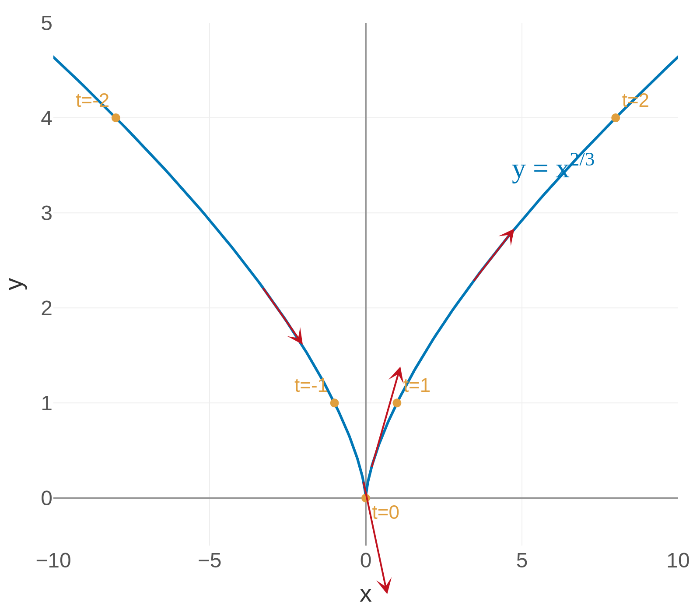
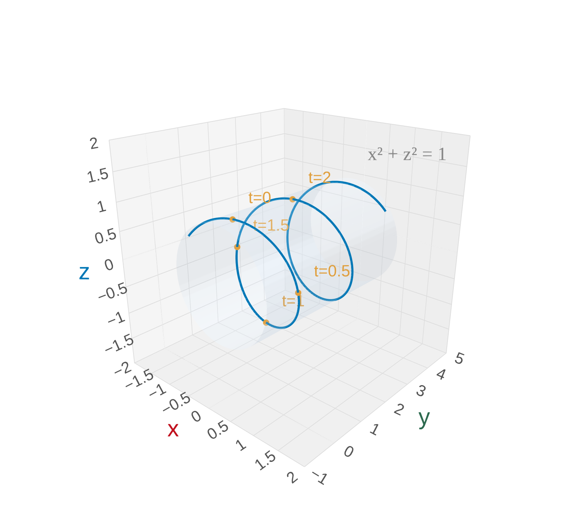

Vector Functions
In Calc I/II, functions take a number in and give a number back: \(f(t) = t^2\).
Now we let the output be a vector instead of a scalar.
A vector function (or vector-valued function) is a function whose input is a scalar \(t\) and whose output is a vector:
\[\vec{r}(t) = \langle f(t),\, g(t),\, h(t) \rangle = f(t)\,\mathbf{i} + g(t)\,\mathbf{j} + h(t)\,\mathbf{k}\]
The functions \(f\), \(g\), \(h\) are called the component functions.
As \(t\) varies, the tip of \(\vec{r}(t)\) traces out a space curve \(C\).
A vector function is just a way of packaging parametric equations into a single object.
Why Vector Functions?
Think of \(t\) as time. Then \(\vec{r}(t)\) gives the position of a moving object at time \(t\).
- The path it traces is the trajectory (a space curve).
Applications everywhere:
- Roller coasters, planetary orbits, particle physics
- Robot arm paths, drone flight plans
- Blood flow through arteries
Chapter 13 is about calculus on curves — the same derivative and integral ideas from Calc I, but now applied to vector functions.
Example 1: Sketch \(\vec{r}(t) = \langle t^3,\, t^2 \rangle\)
Strategy for sketching a vector function:
- Make a table of values
- Try to eliminate \(t\) to recognize the Cartesian curve
- Mark the direction of travel (increasing \(t\))
Step 1 — Make a table. Plug in a few values of \(t\):
| \(t\) | \(x = t^3\) | \(y = t^2\) |
|---|---|---|
| \(-2\) | \(-8\) | \(4\) |
| \(-1\) | \(-1\) | \(1\) |
| \(0\) | \(0\) | \(0\) |
| \(1\) | \(1\) | \(1\) |
| \(2\) | \(8\) | \(4\) |
Step 2 — Eliminate the parameter. From \(x = t^3\) we get \(t = x^{1/3}\), so \(y = (x^{1/3})^2 = x^{2/3}\).
Step 3 — Direction of travel. As \(t\) goes from \(-2\) to \(2\), the point moves left-to-right through the origin.

. The curve has a cusp at the origin and extends to (-8, 4) on the left and (8, 4) on the right. The equation y = x^(2/3) is shown. Direction arrows indicate travel from left to right as t increases. Key points are marked at t = -2, -1, 0, 1, 2." class="plotly-lazy-thumb" data-plotly-src="figures/parametric_2d.html" style="max-height:60vh;" title="Click to interact">The curve \(y = x^{2/3}\) has a cusp at the origin. The parametrization tells us which way to travel along the curve.
Your Turn: Sketch \(\vec{r}(t) = \langle 2\cos t,\, 2\sin t \rangle\)
Use the same strategy: make a table, eliminate \(t\), identify the curve.
Try it before looking at the solution.
Eliminate \(t\): \(x = 2\cos t\) and \(y = 2\sin t\), so \(x^2 + y^2 = 4\cos^2 t + 4\sin^2 t = 4\).
This is a circle of radius 2, traced counterclockwise (starting at \((2,0)\) when \(t = 0\)).
Notice how the trig components combine via the Pythagorean identity — the same trick we'll use in 3D!
Space Curves in 3D
In 3D, a vector function \(\vec{r}(t) = \langle f(t), g(t), h(t) \rangle\) traces out a space curve.
We can still make tables, but now we plot in \(xyz\)-space.
Common strategy: Look at what the components tell you.
- Do any components involve trig? That hints at circular motion.
- Is one component linear (like \(y = t\))? That means steady motion in one direction.
- Can you combine components to recognize a surface (like \(x^2 + z^2 = 1\))?
The component functions are the clues — they tell you what surface the curve lives on and how it moves.
Example 2: Sketch \(\vec{r}(t) = \langle \sin \pi t,\, t,\, \cos \pi t \rangle\)
Step 1 — Identify the cylinder. Look at which components involve trig:
\(x^2 + z^2 = \sin^2(\pi t) + \cos^2(\pi t) = 1\)
The curve lives on the cylinder \(x^2 + z^2 = 1\) (radius 1, centered on the \(y\)-axis).
Step 2 — What does \(y\) do? \(y = t\) increases steadily \(\rightarrow\) the curve spirals upward along the \(y\)-axis.
Step 3 — How fast does it wind? The argument \(\pi t\) completes one full cycle when \(\pi t\) goes from \(0\) to \(2\pi\), i.e., when \(t\) goes from \(0\) to \(2\). So one full turn every 2 units along the \(y\)-axis.
| \(t\) | \(x = \sin\pi t\) | \(y = t\) | \(z = \cos\pi t\) |
|---|---|---|---|
| \(0\) | \(0\) | \(0\) | \(1\) |
| \(\tfrac{1}{2}\) | \(1\) | \(\tfrac{1}{2}\) | \(0\) |
| \(1\) | \(0\) | \(1\) | \(-1\) |
| \(\tfrac{3}{2}\) | \(-1\) | \(\tfrac{3}{2}\) | \(0\) |
| \(2\) | \(0\) | \(2\) | \(1\) |

spiraling along the y-axis on a translucent cylinder x² + z² = 1. The helix completes one full turn every 2 units in the y-direction. Key points are marked at t = 0, 0.5, 1, 1.5, and 2." class="plotly-lazy-thumb" data-plotly-src="figures/helix.html" style="max-height:60vh;" title="Click to interact">This is a helix — trig + trig + linear = spiral. Think of wrapping a string around a paper towel tube.
Where Does a Curve Meet a Surface?
A common question: where does a space curve intersect a surface?
The strategy is straightforward:
- Substitute the components \(x = f(t)\), \(y = g(t)\), \(z = h(t)\) into the surface equation.
- Solve the resulting equation for \(t\).
- Plug back into \(\vec{r}(t)\) to get the point(s).
This reduces a 3D geometry problem to solving an equation in one variable \(t\).
Example 3: Where does \(\vec{r}(t) = \langle \sin t,\, \cos t,\, t \rangle\) meet \(x^2 + y^2 + z^2 = 5\)?
Step 1 — Substitute the components into the sphere equation:
\(\sin^2 t + \cos^2 t + t^2 = 5\)
Step 2 — Simplify. The Pythagorean identity \(\sin^2 t + \cos^2 t = 1\) collapses two terms:
\(1 + t^2 = 5 \quad\Rightarrow\quad t^2 = 4 \quad\Rightarrow\quad t = \pm 2\)
Step 3 — Find the points. Plug \(t = 2\) and \(t = -2\) back into \(\vec{r}(t)\):
- \(\vec{r}(2) = \langle \sin 2,\, \cos 2,\, 2 \rangle \approx \langle 0.909,\, {-0.416},\, 2 \rangle\)
- \(\vec{r}(-2) = \langle \sin(-2),\, \cos(-2),\, -2 \rangle \approx \langle {-0.909},\, {-0.416},\, -2 \rangle\)

The helix pierces the sphere at exactly two points, at \(t = \pm 2\). The Pythagorean identity did the heavy lifting!
Your Turn: Where does \(\vec{r}(t) = \langle t,\, 2t,\, 3t \rangle\) meet \(x^2 + y^2 + z^2 = 14\)?
Use the same three steps: substitute, solve for \(t\), plug back in.
Try it before looking at the solution.
Substitute the components into \(x^2 + y^2 + z^2 = 14\):
\[t^2 + (2t)^2 + (3t)^2 = 14\]
Simplify: \(t^2 + 4t^2 + 9t^2 = 14 \quad\Rightarrow\quad 14t^2 = 14 \quad\Rightarrow\quad t = \pm 1\)
Points: \(\vec{r}(1) = \langle 1, 2, 3 \rangle\) and \(\vec{r}(-1) = \langle -1, -2, -3 \rangle\)
This curve is a line through the origin (direction \(\langle 1,2,3 \rangle\)), and it pierces the sphere at two opposite points.
Section 13.1 Summary
\(\vec{r}(t) = \langle f(t), g(t), h(t) \rangle\) — output is a vector
The path traced by \(\vec{r}(t)\) as \(t\) varies
Table of values \(\rightarrow\) eliminate \(t\) \(\rightarrow\) mark direction
Two trig components \(\Rightarrow\) cylinder; linear component \(\Rightarrow\) spiral
Combine components to find a surface (\(x^2+z^2=1\) \(\rightarrow\) cylinder). The remaining component tells you how the curve moves along it.
Substitute components into surface equation \(\rightarrow\) solve for \(t\) \(\rightarrow\) plug back into \(\vec{r}(t)\)
Homework
Section 13.1
3, 5, 7, 11, 15, 19, 25–30